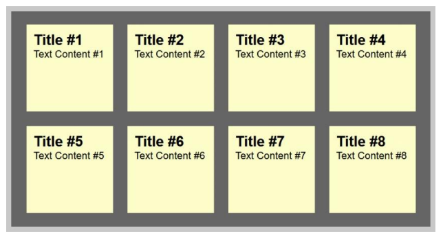

by Chris Heilmann 27 Jan 2021
Difficulty:Intermediate Length:Medium Languages:

In this tutorial, you'll learn how to transform an HTML list into a wall of "sticky
notes" that look and work like the following:
The effect is built up gradually and works on all up-to-date browsers like
Chrome, Safari, Firefox, and Opera. Older browsers simply get some yellow
squares.
In order to tilt an element, you use the transform:rotate
property of CSS3,
again adding the prefix for each of the browsers:
Apple never showed intentions of racing the Nexus 7 to the bottom in the tablet game, and the
iPhone 5c is proof that it won't do that in the phone arena, either.
Infographic by Troy Dunham for Engadget
Kebudayaan Indonesia yang multikultur seperti itu, ketika dikaji dari sisi dimensi waktu, dapat dibagi pula pengertiannya :
| FEEDBACK | |
|---|---|
| Nama | : |
| : | |
| Jenis Kelamin | : Laki-Laki Perempuan |
| Golongan | : |
| Kemampuan | : Bahasa Olahraga Fisik Agama |
| Testimoni | : |
| Januari | Total | Februari | Total | Keluar | Total | |
|---|---|---|---|---|---|---|
| Masuk | Masuk | Januari | Februari | |||
| Sub Total 1 | ||||||
| Sub Total 2 | ||||||
| Total | ||||||